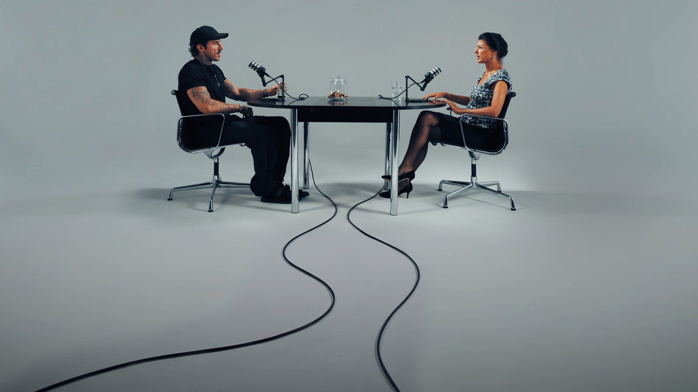
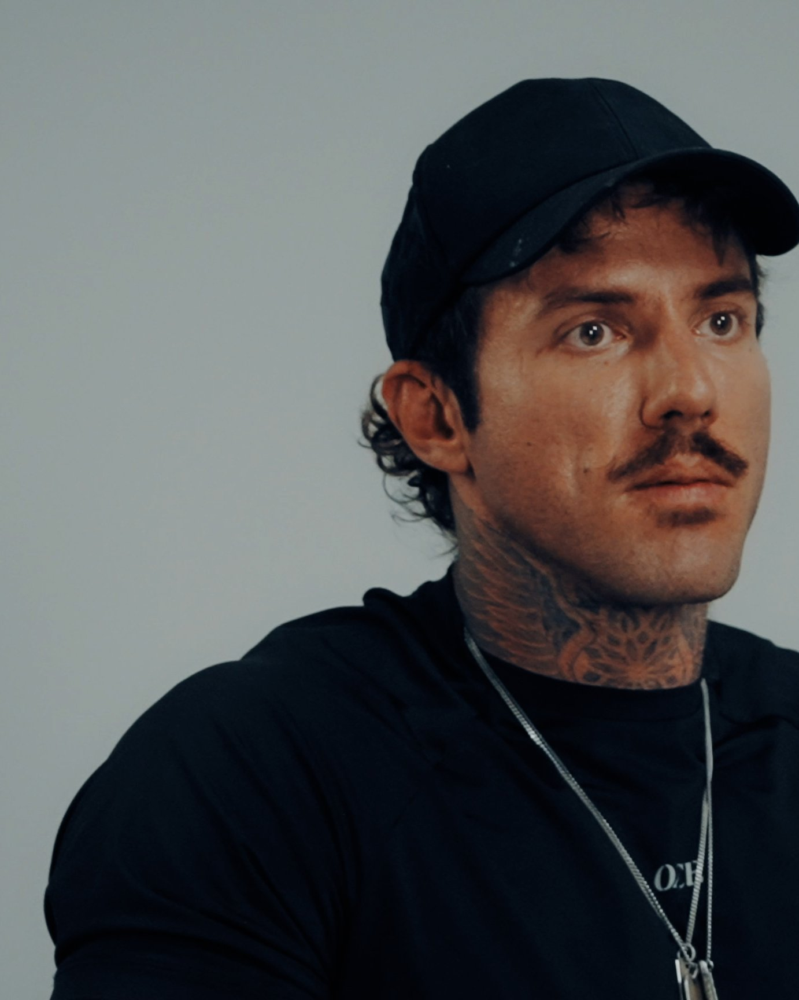
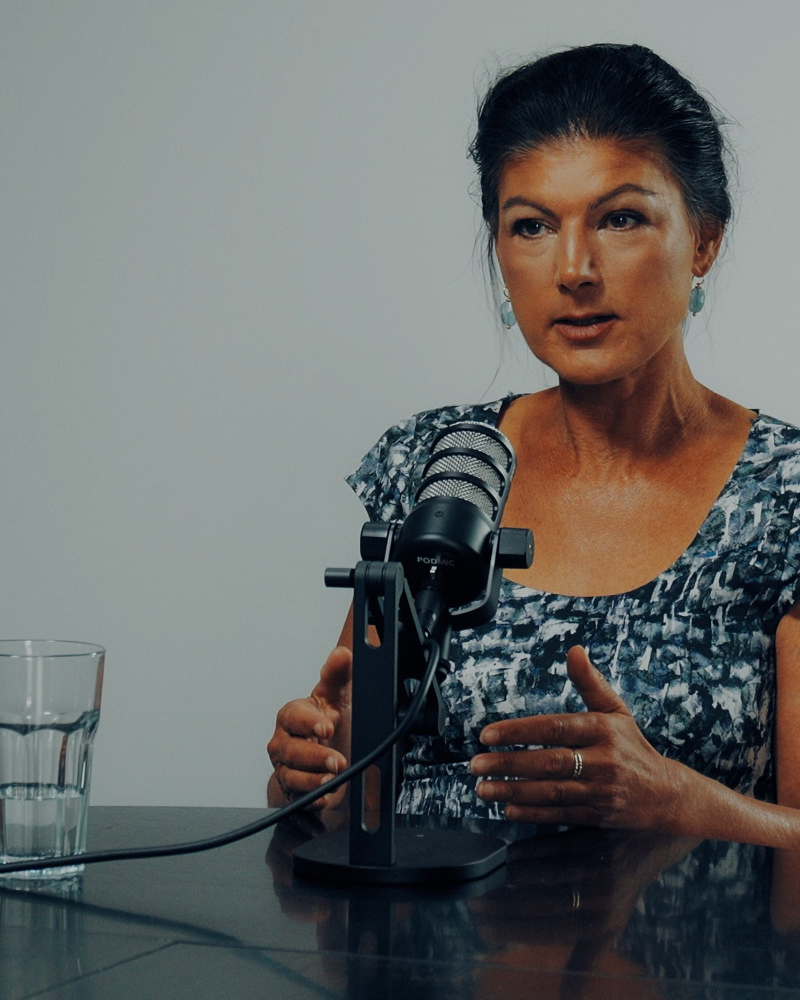
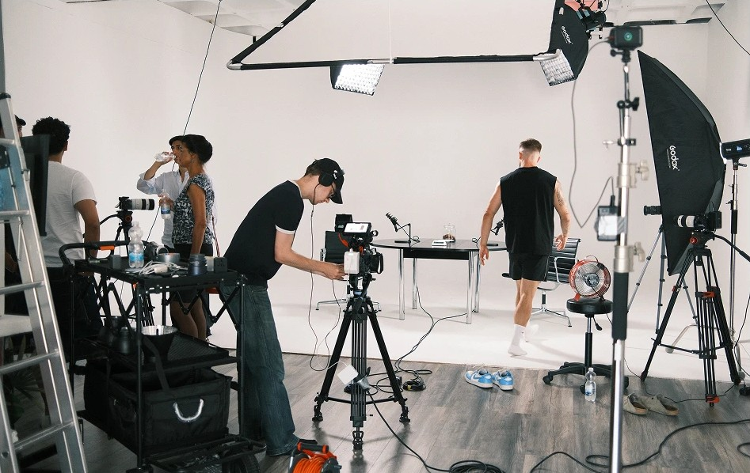

(Case 04) Kunde · Christian Wolf
Christian Wolf × Sahra Wagenknecht
Ein politisches Gespräch mit viel Aufmerksamkeit für unseren Kunden Christian Wolf — Multicam-Studioproduktion im 141.studio, Creative Direction von PLACEMedia.

Die Aufgabe
Ein Gespräch mit einer bundesweit bekannten Politikerin, das ruhig, ernsthaft und filmisch wirken musste — auf einem weißen Set, aus jedem Winkel gleichzeitig.
Was wir gemacht haben
- Creative Direction
- Multicam-Studiosetup und Licht
- Aufzeichnung im 141.studio
- Behind-the-Scenes-Content



Du planst etwas in der Art?
Projekt starten →